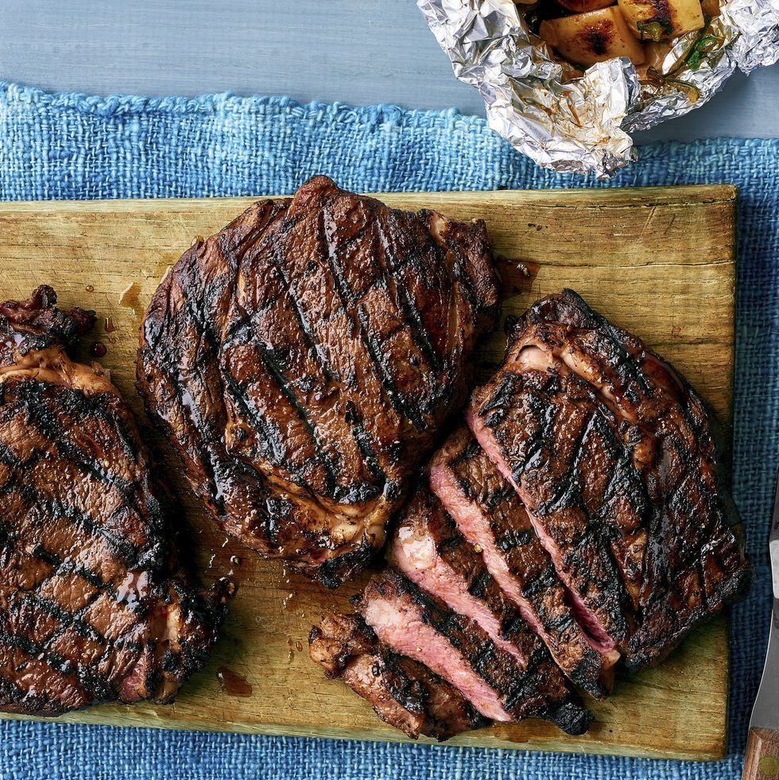

The Best Steak

The most delicious and nutrion-dense food everbody should eat
No matter what time of the year this dish will always taste delicious. You can use your grill, oven or pan. With th following ingridients you will have a tasteful, beautiful and healthy meal.
Ingridients
- Grass fed Entrecote steak
- Grass fed Butter
- Fresh Garlic
- Fresh Rosmarin
- A lemon
- Pepper an Salt
To do Following
- Let the fresh steak come te room temperature for 1-2 hours before making
- Heat up the pan or grill. In the meantime you prepare the garlic, rosmarin and pepper
- When the temperature is rigt, add the butter
- Put the steak in the hot melted butter and let it sit on each site for about 1-2 minutes. Repeat this process for a maximum of 3 times
- Take the meat out of the pan and let it rest
- Put the prepared spices in the pan only for the time the steak is resting. The spices should take all the flavor of the butter and meat.
- Now put the cooked spices on top of the steak
- Take the lemon and squeeye the juice on the pan when the pan has lost most of its heat so that you can take the last grease of the pan
- Gently put the juices on the steak and zour meal is finished with a pan that is also easier to clean afterwards
- Now grab your plate and enjoy your selfmade, nutritious steak